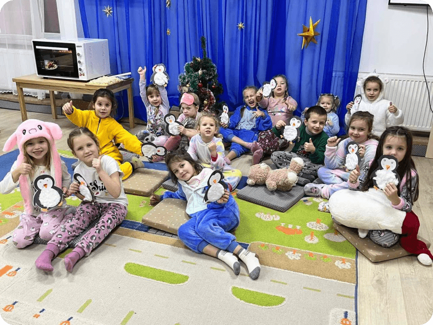
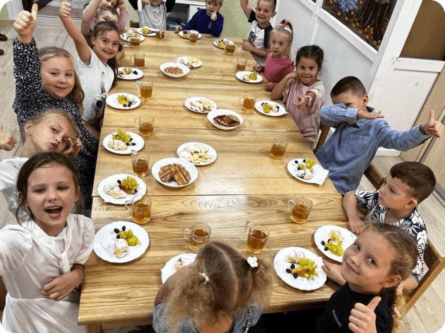
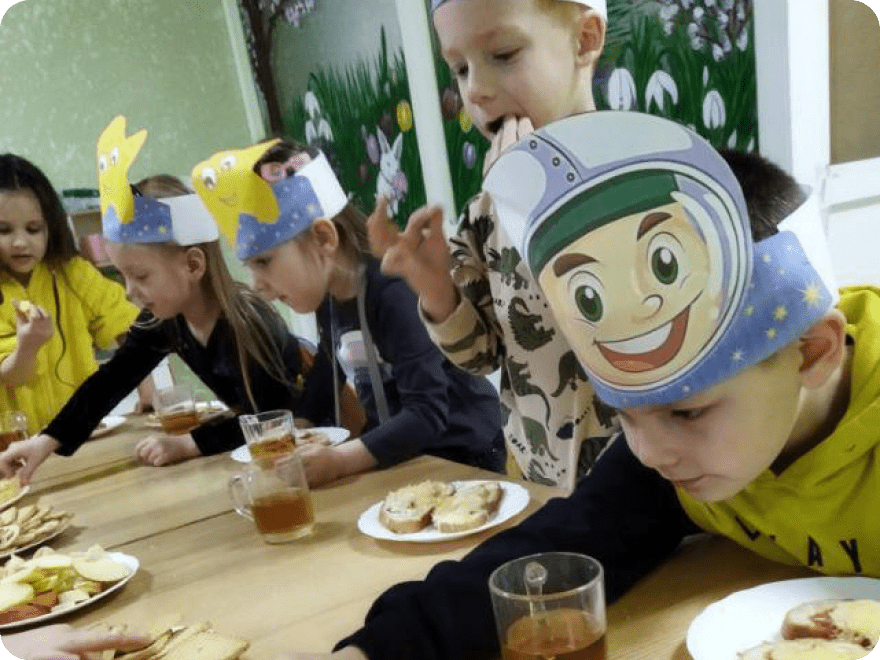
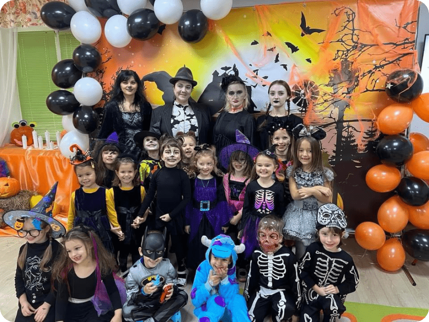
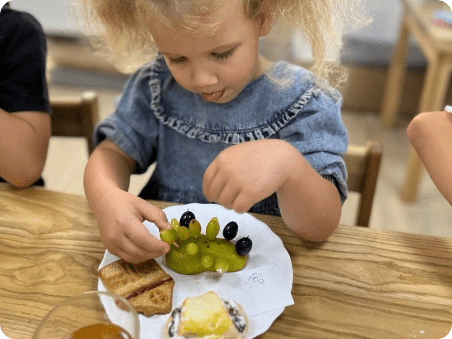

цікава субота
Цікава Субота: Вихідні ваших дітей стануть незабутніми!
Якщо ви шукаєте спосіб провести вихідні з максимальною користю та задоволенням для ваших дітей, "Цікава Субота" – це те, що вам потрібно! Щосуботи з 10:00 до 14:00 цей захоплюючий захід стане справжнім святом для дітей. Кожна субота має свою унікальну тематику, що робить кожен раз особливим і незабутнім.
Записати дитинуТематичні вечірки для кожного смаку
Піжамна вечірка
Діти можуть прийти у своїх найулюбленіших піжамах і насолодитися комфортною атмосферою, граючи у веселі ігри та роблячи творчі поробки.
Записати дитинуГавайська вечірка
Тут дітей чекає справжня гавайська феєрія з іграми, танцями під запальні ритми та барвистими декораціями.
Записати дитинуКосмічна вечірка
Відправтеся в захоплюючу космічну подорож! Діти зможуть створити власні космічні кораблі, малювати зірки та галактики та грати в ігри, пов'язані з космосом.
Записати дитинуHelloween
Діти можуть прийти у своїх найулюбленіших піжамах і насолодитися комфортною атмосферою, граючи у веселі ігри та роблячи творчі поробки.
Записати дитинуФруктова вечірка
Тут дітей чекає справжня гавайська феєрія з іграми, танцями під запальні ритми та барвистими декораціями.
Записати дитинуЯскраві активності та смачні перекуси
"Цікава Субота" не обмежується лише тематичними вечірками.
- Діти мають можливість грати у різноманітні ігри, проходити цікаві квести, виготовляти поробки та малювати.
- Крім того, вони можуть танцювати під улюблені хіти на дискотеці з світло музикою та готувати кулінарні шедеври.
- О 12:00 всі учасники отримують смачний перекус, що додає ще більше задоволення до захоплюючого дня.
- Діти також гуляють на свіжому повітрі на нашому власному красивому та затишному майданчику, що додає енергії та свіжості у святковий день.